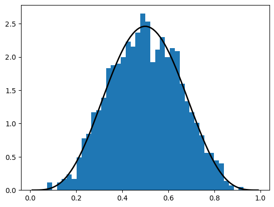
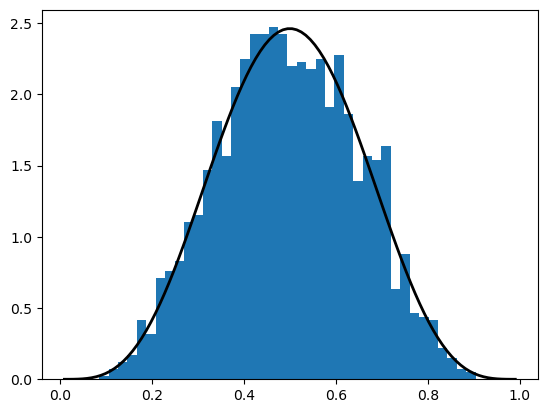
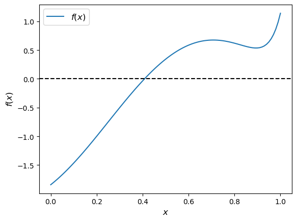
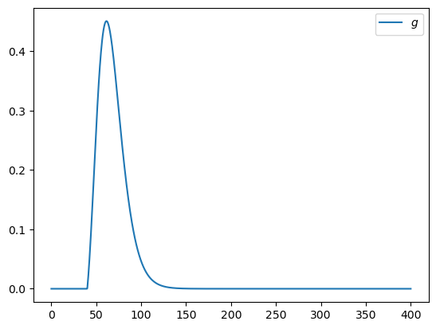

12. SciPy#
علاوه بر آنچه در Anaconda موجود است، این سخنرانی به کتابخانههای زیر نیاز خواهد داشت:
!pip install --upgrade quantecon
ما از import های زیر استفاده میکنیم.
import numpy as np
import quantecon as qe
12.1. مروری کلی#
SciPy بر روی NumPy ساخته شده است تا ابزارهای متداول برای برنامهنویسی علمی را فراهم کند، از جمله
و غیره، و غیره
همانند NumPy، SciPy پایدار، بالغ و به طور گستردهای استفاده میشود.
بسیاری از روالهای SciPy پوششهای نازکی در اطراف کتابخانههای استاندارد صنعتی Fortran مانند LAPACK، BLAS و غیره هستند.
واقعاً نیازی به “یادگیری” SciPy به عنوان یک کل نیست.
رویکرد متداولتر این است که ایدهای کلی از آنچه در کتابخانه موجود است به دست آورید و سپس در صورت نیاز به مستندات مراجعه کنید.
در این سخنرانی، ما فقط قصد داریم برخی بخشهای مفید بسته را برجسته کنیم.
12.2. SciPy در مقابل NumPy#
SciPy بستهای است که حاوی ابزارهای مختلفی است که بر روی NumPy ساخته شدهاند و از نوع داده آرایه و عملکردهای مرتبط آن استفاده میکنند.
Note
در نسخههای قدیمیتر SciPy (scipy < 0.15.1)، import کردن بسته، سمبلهای NumPy را نیز به فضای نام سراسری import میکرد، همانطور که از این گزیده از فایل مقداردهی اولیه SciPy مشخص است:
from numpy import *
from numpy.random import rand, randn
from numpy.fft import fft, ifft
from numpy.lib.scimath import *
با این حال، رویه بهتری است که از عملکرد NumPy به صورت صریح استفاده شود.
import numpy as np
a = np.identity(3)
نسخههای اخیر SciPy (1.15+) دیگر به طور خودکار سمبلهای NumPy را import نمیکنند.
آنچه در SciPy مفید است، عملکرد در زیربستههای آن است
scipy.optimize،scipy.integrate،scipy.statsو غیره.
بیایید برخی از زیربستههای اصلی را بررسی کنیم.
12.3. آمار#
زیربسته scipy.stats موارد زیر را ارائه میدهد
اشیاء متغیر تصادفی متعدد (چگالیها، توزیعهای تجمعی، نمونهبرداری تصادفی و غیره)
برخی روشهای تخمین
برخی آزمونهای آماری
12.3.1. متغیرهای تصادفی و توزیعها#
به یاد بیاورید که numpy.random توابعی را برای تولید متغیرهای تصادفی فراهم میکند
np.random.beta(5, 5, size=3)
array([0.28901026, 0.26678612, 0.49129414])
این یک نمونه از توزیع با تابع چگالی زیر را وقتی a, b = 5, 5 تولید میکند
گاهی اوقات ما نیاز به دسترسی به خود چگالی، یا cdf، چندکها و غیره داریم.
برای این منظور، میتوانیم از scipy.stats استفاده کنیم که تمام این عملکرد و همچنین تولید اعداد تصادفی را در یک رابط سازگار واحد فراهم میکند.
این یک مثال از استفاده است
from scipy.stats import beta
import matplotlib.pyplot as plt
q = beta(5, 5) # Beta(a, b), with a = b = 5
obs = q.rvs(2000) # 2000 observations
grid = np.linspace(0.01, 0.99, 100)
fig, ax = plt.subplots()
ax.hist(obs, bins=40, density=True)
ax.plot(grid, q.pdf(grid), 'k-', linewidth=2)
plt.show()

شیء q که نماینده توزیع است، متدهای مفید دیگری نیز دارد، از جمله
q.cdf(0.4) # Cumulative distribution function
np.float64(0.26656768000000003)
q.ppf(0.8) # Quantile (inverse cdf) function
np.float64(0.6339134834642708)
q.mean()
np.float64(0.5)
نحو کلی برای ایجاد این اشیا که نمایانگر توزیعها هستند (از نوع rv_frozen) به صورت زیر است
name = scipy.stats.distribution_name(shape_parameters, loc=c, scale=d)
اینجا distribution_name یکی از نامهای توزیع در scipy.stats است.
پارامترهای loc و scale متغیر تصادفی اصلی
\(X\) را به \(Y = c + d X\) تبدیل میکنند.
12.3.2. نحو جایگزین#
یک روش جایگزین برای فراخوانی متدهای توصیف شده در بالا وجود دارد.
به عنوان مثال، کدی که نمودار بالا را تولید میکند میتواند با کد زیر جایگزین شود
obs = beta.rvs(5, 5, size=2000)
grid = np.linspace(0.01, 0.99, 100)
fig, ax = plt.subplots()
ax.hist(obs, bins=40, density=True)
ax.plot(grid, beta.pdf(grid, 5, 5), 'k-', linewidth=2)
plt.show()

12.3.3. چیزهای مفید دیگر در scipy.stats#
انواع توابع آماری در scipy.stats وجود دارد.
به عنوان مثال، scipy.stats.linregress رگرسیون خطی ساده را پیادهسازی میکند
from scipy.stats import linregress
x = np.random.randn(200)
y = 2 * x + 0.1 * np.random.randn(200)
gradient, intercept, r_value, p_value, std_err = linregress(x, y)
gradient, intercept
(np.float64(1.9947417892595127), np.float64(0.004759863613815696))
برای مشاهده لیست کامل، مستندات را مشاهده کنید.
12.4. ریشهها و نقاط ثابت#
یک ریشه یا صفر یک تابع حقیقی \(f\) در \([a,b]\) یک \(x \in [a, b]\) است به طوری که \(f(x)=0\).
به عنوان مثال، اگر تابع زیر را رسم کنیم
با \(x \in [0,1]\) به نتیجه زیر میرسیم
f = lambda x: np.sin(4 * (x - 1/4)) + x + x**20 - 1
x = np.linspace(0, 1, 100)
fig, ax = plt.subplots()
ax.plot(x, f(x), label='$f(x)$')
ax.axhline(ls='--', c='k')
ax.set_xlabel('$x$', fontsize=12)
ax.set_ylabel('$f(x)$', fontsize=12)
ax.legend(fontsize=12)
plt.show()

ریشه یکتا تقریباً 0.408 است.
بیایید برخی تکنیکهای عددی برای یافتن ریشهها را در نظر بگیریم.
12.4.1. Bisection#
یکی از متداولترین الگوریتمها برای یافتن ریشه عددی، نصف کردن است.
برای درک ایده، بازی شناخته شده زیر را به یاد بیاورید که
بازیکن A به یک عدد مخفی بین 1 و 100 فکر میکند
بازیکن B میپرسد آیا کمتر از 50 است
اگر بله، B میپرسد آیا کمتر از 25 است
اگر خیر، B میپرسد آیا کمتر از 75 است
و به همین ترتیب.
این همان نصف کردن است.
در اینجا یک پیادهسازی ساده از الگوریتم در Python آورده شده است.
برای تمام توابع پیوسته صعودی با رفتار مناسب با \(f(a) < 0 < f(b)\) کار میکند
def bisect(f, a, b, tol=10e-5):
"""
Implements the bisection root finding algorithm, assuming that f is a
real-valued function on [a, b] satisfying f(a) < 0 < f(b).
"""
lower, upper = a, b
while upper - lower > tol:
middle = 0.5 * (upper + lower)
if f(middle) > 0: # root is between lower and middle
lower, upper = lower, middle
else: # root is between middle and upper
lower, upper = middle, upper
return 0.5 * (upper + lower)
بیایید آن را با استفاده از تابع \(f\) تعریف شده در (12.2) آزمایش کنیم
bisect(f, 0, 1)
0.408294677734375
جای تعجب نیست که SciPy تابع نصف کردن خود را ارائه میدهد.
بیایید آن را با استفاده از همان تابع \(f\) تعریف شده در (12.2) آزمایش کنیم
from scipy.optimize import bisect
bisect(f, 0, 1)
0.4082935042806639
12.4.2. روش Newton-Raphson Method#
یکی دیگر از الگوریتمهای بسیار متداول یافتن ریشه، روش نیوتن-رافسون است.
در SciPy این الگوریتم توسط scipy.optimize.newton پیادهسازی شده است.
برخلاف نصف کردن، روش نیوتن-رافسون از اطلاعات شیب محلی در تلاش برای افزایش سرعت همگرایی استفاده میکند.
بیایید این را با استفاده از همان تابع \(f\) تعریف شده در بالا بررسی کنیم.
با یک شرط اولیه مناسب برای جستجو، همگرایی به دست میآید:
from scipy.optimize import newton
newton(f, 0.2) # Start the search at initial condition x = 0.2
np.float64(0.40829350427935673)
اما شرایط اولیه دیگر منجر به شکست در همگرایی میشوند:
newton(f, 0.7) # Start the search at x = 0.7 instead
np.float64(0.7001700000000279)
12.4.3. روشهای ترکیبی#
یک اصل کلی روشهای عددی به شرح زیر است:
اگر دانش خاصی درباره یک مسئله معین دارید، ممکن است بتوانید از آن برای ایجاد کارایی بهرهبرداری کنید.
اگر نه، انتخاب الگوریتم شامل یک مبادله بین سرعت و استحکام است.
در عمل، اکثر الگوریتمهای پیشفرض برای یافتن ریشه، بهینهسازی و نقاط ثابت از روشهای ترکیبی استفاده میکنند.
این روشها معمولاً یک روش سریع را با یک روش قوی به روش زیر ترکیب میکنند:
سعی کنید از یک روش سریع استفاده کنید
تشخیصها را بررسی کنید
اگر تشخیصها بد باشند، به یک الگوریتم قویتر تبدیل شوید
در scipy.optimize، تابع brentq چنین روش ترکیبی است و یک پیشفرض خوب
from scipy.optimize import brentq
brentq(f, 0, 1)
0.40829350427936706
اینجا راهحل صحیح یافت میشود و سرعت بهتر از نصف کردن است:
with qe.Timer(unit="milliseconds"):
brentq(f, 0, 1)
0.0401 ms elapsed
with qe.Timer(unit="milliseconds"):
bisect(f, 0, 1)
0.1240 ms elapsed
12.4.4. یافتن ریشه چند متغیره#
از scipy.optimize.fsolve استفاده کنید، یک wrapper برای یک روش ترکیبی در MINPACK.
برای جزئیات مستندات را ببینید.
12.4.5. نقاط ثابت#
یک نقطه ثابت یک تابع حقیقی \(f\) در \([a,b]\) یک \(x \in [a, b]\) است به طوری که \(f(x)=x\).
SciPy تابعی برای یافتن نقاط ثابت (اسکالر) نیز دارد
from scipy.optimize import fixed_point
fixed_point(lambda x: x**2, 10.0) # 10.0 is an initial guess
array(1.)
اگر نتایج خوبی نگرفتید، همیشه میتوانید به یافتن ریشه brentq برگردید، زیرا
نقطه ثابت یک تابع \(f\) ریشه \(g(x) := x - f(x)\) است.
12.5. Optimization#
اکثر بستههای عددی فقط توابعی برای کمینهسازی ارائه میدهند.
بیشینهسازی را میتوان با یادآوری این که بیشینهکننده یک تابع \(f\) در دامنه \(D\) کمینهکننده \(-f\) در \(D\) است انجام داد.
کمینهسازی ارتباط نزدیکی با یافتن ریشه دارد: برای توابع هموار، بهینههای داخلی مطابق با ریشههای مشتق اول هستند.
مبادله سرعت/استحکام توصیف شده در بالا نیز با بهینهسازی عددی وجود دارد.
مگر اینکه اطلاعات قبلی داشته باشید که بتوانید از آن بهرهبرداری کنید، معمولاً بهتر است از روشهای ترکیبی استفاده کنید.
برای کمینهسازی تک متغیره (یعنی اسکالر) محدود، یک گزینه ترکیبی خوب fminbound است
from scipy.optimize import fminbound
fminbound(lambda x: x**2, -1, 2) # Search in [-1, 2]
np.float64(0.0)
12.5.1. بهینهسازی چند متغیره#
بهینهسازهای محلی چند متغیره شامل minimize، fmin، fmin_powell، fmin_cg، fmin_bfgs و fmin_ncg هستند.
بهینهسازهای محلی چند متغیره محدود شامل fmin_l_bfgs_b، fmin_tnc، fmin_cobyla هستند.
برای جزئیات مستندات را ببینید.
12.6. Integration#
اکثر روشهای انتگرالگیری عددی با محاسبه انتگرال یک چندجملهای تقریبی کار میکنند.
خطای حاصل به این بستگی دارد که چندجملهای چقدر به انتگرالگیرنده “متناسب” باشد، که به نوبه خود بستگی به این دارد که انتگرالگیرنده چقدر “منظم” است.
در SciPy، ماژول مربوطه برای انتگرالگیری عددی scipy.integrate است.
یک پیشفرض خوب برای انتگرالگیری تک متغیره quad است
from scipy.integrate import quad
integral, error = quad(lambda x: x**2, 0, 1)
integral
0.33333333333333337
در واقع، quad یک رابط برای یک روال بسیار استاندارد انتگرالگیری عددی در کتابخانه Fortran به نام QUADPACK است.
از کادراتور Clenshaw-Curtis استفاده میکند که مبتنی بر بسط بر حسب چندجملهایهای Chebychev است.
گزینههای دیگری نیز برای انتگرالگیری تک متغیره وجود دارد—یک گزینه مفید fixed_quad است که سریع است و بنابراین در داخل حلقههای for به خوبی کار میکند.
توابعی نیز برای انتگرالگیری چند متغیره وجود دارد.
برای جزئیات بیشتر مستندات را ببینید.
12.7. Linear Algebra#
دیدیم که NumPy ماژولی برای جبر خطی به نام linalg ارائه میدهد.
SciPy نیز ماژولی برای جبر خطی با همان نام ارائه میدهد.
دومی یک زیرمجموعه دقیق از اولی نیست، اما به طور کلی عملکرد بیشتری دارد.
ما به شما میگذاریم که مجموعه روالهای موجود را بررسی کنید.
12.8. تمرینها#
چند تمرین اول مربوط به قیمتگذاری یک اختیار خرید اروپایی تحت فرض خنثی بودن ریسک است. قیمت صدق میکند
که در آن
\(\beta\) یک عامل تنزیل است،
\(n\) تاریخ انقضا است،
\(K\) قیمت اعمال است و
\(\{S_t\}\) قیمت دارایی پایه در هر زمان \(t\) است.
به عنوان مثال، اگر اختیار خرید برای خرید سهام در آمازون با قیمت اعمال \(K\) باشد، مالک این حق (اما نه تعهد) را دارد که 1 سهم در آمازون را با قیمت \(K\) پس از \(n\) روز بخرد.
بنابراین بازده \(\max\{S_n - K, 0\}\) است
قیمت، امید ریاضی بازده است که به ارزش فعلی تنزیل شده است.
Exercise 12.1
فرض کنید \(S_n\) دارای توزیع لگ-نرمال با پارامترهای \(\mu\) و \(\sigma\) است. فرض کنید \(f\) نشاندهنده چگالی این توزیع باشد. آنگاه
تابع زیر را رسم کنید
در بازه \([0, 400]\) وقتی μ, σ, β, n, K = 4, 0.25, 0.99, 10, 40.
Hint
از scipy.stats میتوانید lognorm را import کنید و سپس از lognorm.pdf(x, σ, scale=np.exp(μ)) برای به دست آوردن چگالی \(f\) استفاده کنید.
Solution to Exercise 12.1
در اینجا یک راهحل ممکن آورده شده است
from scipy.integrate import quad
from scipy.stats import lognorm
μ, σ, β, n, K = 4, 0.25, 0.99, 10, 40
def g(x):
return β**n * np.maximum(x - K, 0) * lognorm.pdf(x, σ, scale=np.exp(μ))
x_grid = np.linspace(0, 400, 1000)
y_grid = g(x_grid)
fig, ax = plt.subplots()
ax.plot(x_grid, y_grid, label="$g$")
ax.legend()
plt.show()

Exercise 12.2
برای به دست آوردن قیمت اختیار، انتگرال این تابع را به صورت عددی با استفاده از quad از scipy.integrate محاسبه کنید.
Solution to Exercise 12.2
P, error = quad(g, 0, 1_000)
print(f"The numerical integration based option price is {P:.3f}")
The numerical integration based option price is 15.188
Exercise 12.3
سعی کنید با استفاده از Monte Carlo برای محاسبه عبارت امید ریاضی در قیمت اختیار، به جای quad، به نتیجه مشابهی برسید.
به طور خاص، از این واقعیت استفاده کنید که اگر \(S_n^1, \ldots, S_n^M\) نمونههای مستقل از توزیع لگنرمال مشخص شده در بالا باشند، آنگاه، طبق قانون اعداد بزرگ،
M = 10_000_000 را تنظیم کنید
Solution to Exercise 12.3
در اینجا یک راهحل آورده شده است:
M = 10_000_000
S = np.exp(μ + σ * np.random.randn(M))
return_draws = np.maximum(S - K, 0)
P = β**n * np.mean(return_draws)
print(f"The Monte Carlo option price is {P:3f}")
The Monte Carlo option price is 15.189647
Exercise 12.4
در این سخنرانی، ما مفهوم فراخوانی تابع بازگشتی را مورد بحث قرار دادیم.
سعی کنید یک پیادهسازی بازگشتی از تابع نصف کردن خانگی توصیف شده در بالا بنویسید.
آن را روی تابع (12.2) آزمایش کنید.
Solution to Exercise 12.4
در اینجا یک راهحل معقول آورده شده است:
def bisect(f, a, b, tol=10e-5):
"""
Implements the bisection root-finding algorithm, assuming that f is a
real-valued function on [a, b] satisfying f(a) < 0 < f(b).
"""
lower, upper = a, b
if upper - lower < tol:
return 0.5 * (upper + lower)
else:
middle = 0.5 * (upper + lower)
print(f'Current mid point = {middle}')
if f(middle) > 0: # Implies root is between lower and middle
return bisect(f, lower, middle)
else: # Implies root is between middle and upper
return bisect(f, middle, upper)
میتوانیم آن را به صورت زیر آزمایش کنیم
f = lambda x: np.sin(4 * (x - 0.25)) + x + x**20 - 1
bisect(f, 0, 1)
Current mid point = 0.5
Current mid point = 0.25
Current mid point = 0.375
Current mid point = 0.4375
Current mid point = 0.40625
Current mid point = 0.421875
Current mid point = 0.4140625
Current mid point = 0.41015625
Current mid point = 0.408203125
Current mid point = 0.4091796875
Current mid point = 0.40869140625
Current mid point = 0.408447265625
Current mid point = 0.4083251953125
Current mid point = 0.40826416015625
0.408294677734375